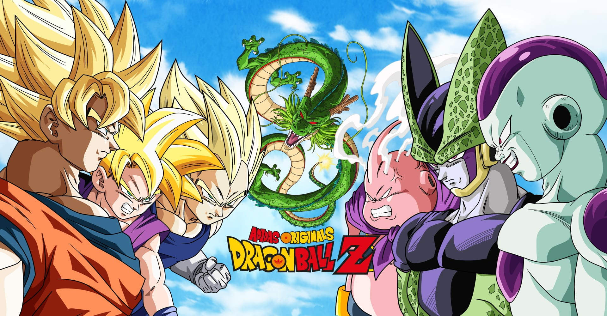
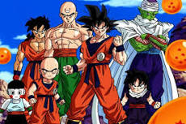
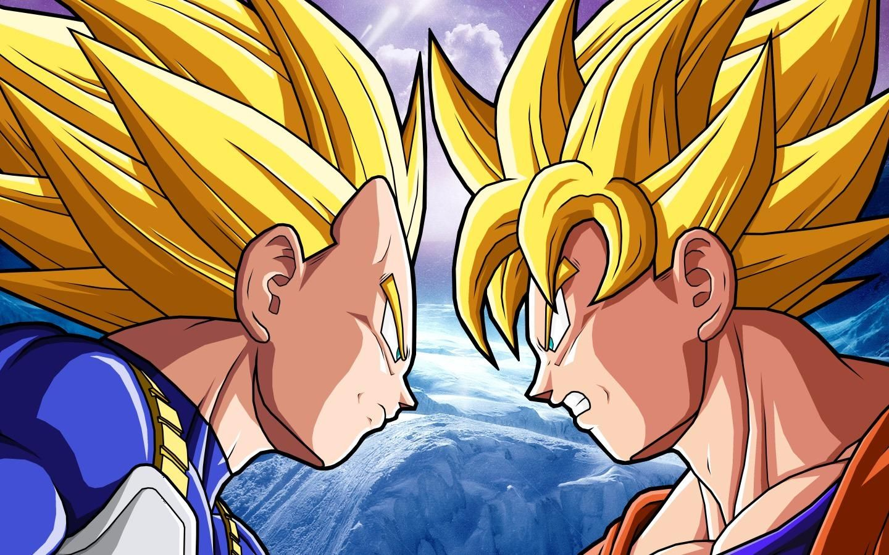

Dragon Ball Z é um anime que foi exibido originalmente no Japão de 1989 a 1996. Ele é a sequência do anime Dragon Ball e conta a história de Goku, que agora é um adulto e precisa enfrentar ameaças ainda maiores.
Dragon Ball Z é conhecido por suas cenas de ação épicas e seus personagens carismáticos, como Vegeta, Piccolo e Trunks.
O anime também apresenta diversas transformações dos personagens, como a Super Saiyajin e a fusão.
Dragon Ball Z é um clássico dos animes e ainda é muito popular hoje em dia. Se você ainda não assistiu, vale a pena conferir!
